Relight 캠페인의 플레이어 캐릭터(PC)와 그들이 굴린 군단병들. 캠페인 종료 후 정리 페이지이므로 결말과 반전을 모두 공개한다.
인류 최후의 정예 부대 군단은 구 제국의 유산으로, 지금은 용병단에 가깝다. 잿불의 왕이 이끄는 언데드 군세에 밀려 에텐마크 평원에서 하늘화살 성채까지 서쪽으로 후퇴하며 벌인 로드무비형 항전이 이 캠페인이다. 잿불은 한 세션에 여러 캐릭터를 굴리는 게임이라, 플레이어 다섯 명은 각자 축이 되는 특수병 한 명을 소유하고 그 위에 각 부대의 신병·숙련병과 지휘 직책을 상황에 따라 번갈아 맡았다.
- 쟈키퐁 — 바론 트레버(저격수)
- 날다다 — 붉은 발티야(의무병)
- 직스 — 은빛 사붓한 바람(척후병)
- 치킨무 — 산호빛 거둔 들판(중전사)
- 오랑시 — 도베르트 다 사니치(장교)
상태 표기: 생존은 그대로, 전사자는 이름과 메타 줄에 ✝를 붙이고 전사 화를 파악되는 범위에서 병기했다. 로스터 상태값과 후기가 어긋나는 경우(멜로디·비넷·테오닌)는 후기를 우선하고 각주로 밝힌다.
특수병 (5인)
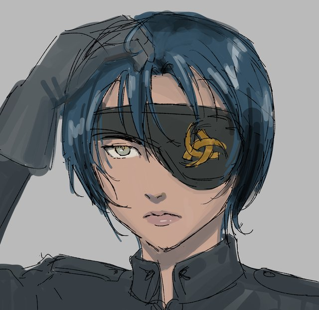
바론 트레버
오르 출신의 16세 갓 성인 저격수. 가난한 집안에서 태어나 오르인 사회의 비교와 차별을 겪었고, 당시 군단 사령관이던 로프리오 후작이 그 재능을 알아보고 어릴 때 거두어주었다. 쿨한 겉모습과 달리 동료를 다정하게 챙기지만, 능력과 지위에 대한 갈증이 끝이 없어 저격 능력을 얻는 대가로 자신의 눈을 악마와 거래했을 정도다. 은인 로프리오는 그가 저격수로 성장한 모습을 끝내 보지 못하고 병사했다.
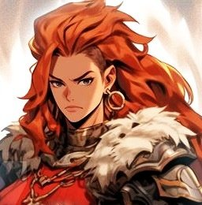
붉은 발티야
타오르는 붉은 머리에 근육질 탱커형인데 직책은 의무병이라는 갭이 인상적인 25세 여성. 언데드에게 어머니를, 이어 아버지를 잃었고, 자신을 여기까지 버티게 해준 바르타인 의무병 에디샤가 전사하며 남긴 유품과 함께 의술을 배우기 시작했다. 불같고 순수한 성격으로, 최종화에서 조라가 레이피어를 살해하자 앞뒤 없이 조라에게 달려들었고 도베르트가 그를 저지해 트라우마에서 구했다. 왜곡증 1단계로 머리가 탈색되고 점점 과격해지던 중이었다.
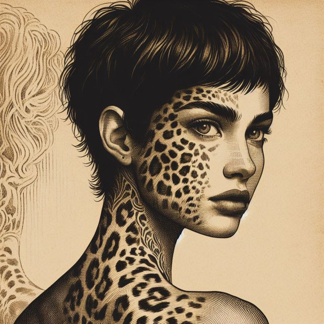
은빛 사붓한 바람
파냐에서 자라 표범 얼룩무늬가 몸에 새겨진 19세의 고아 척후병. 산호빛 거둔 들판의 고아원 출신으로, 독립해 도둑질로 떠돌았다고 여겼지만 실은 마을 사람들이 눈감아준 것이었다. 잠입과 방해에 특화됐고 남과 애착을 맺는 데 서툴다. 2화에서는 불타는 칼스부르크에 홀로 잠입해 척후로 활약했다.
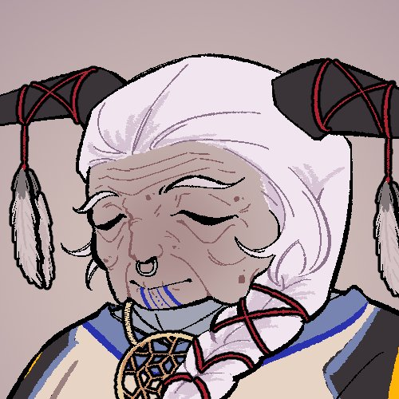
산호빛 거둔 들판
버팔로의 뿔을 지닌 72세 여성, 이른바 “들판 할머니”. 남편과 사별한 뒤 40년간 파냐 습지 마을에서 고아원을 운영하며 수많은 고아의 어머니가 되어 ‘들판’이라는 세 번째 이름을 얻었다. 시국이 어려워지자 아이들을 지키려 직접 자원했다. 인자하지만 전투에선 지팡이로 적의 머리를 내리치는 거침없는 노장이다. “누가 우리 똥강아지 괴롭혔는고!”
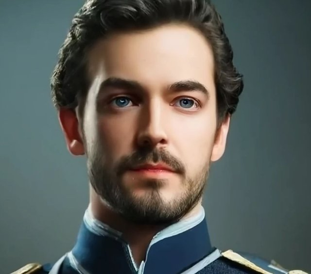
도베르트 다 사니치
오르 수도 출신의 30대 초반 장교, 기혼에 자녀 셋. 부유한 사니치 가문의 이름과 자산으로 처음부터 높은 지위로 입대해 정당성 논란을 샀지만 개의치 않는 능력주의자다. 신병에게 냉혹하지만 실은 따뜻하고, 자각하지 못한 PTSD를 앓아 신병을 희생시키는 꿈과 신경성 위염에 시달린다. 최종화에서 조라에게 폭주하는 발티야를 몸으로 막아 그를 구했다.
군단 직책
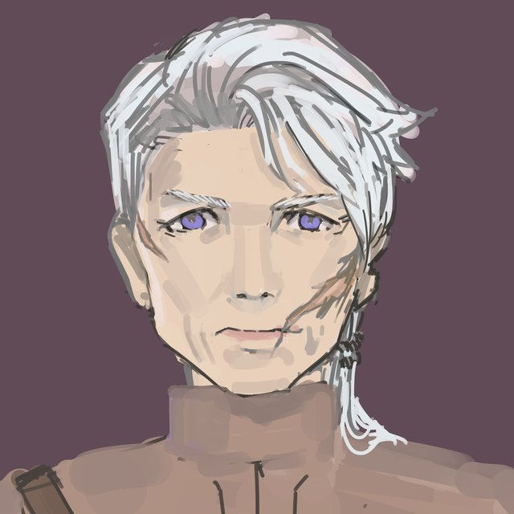
안개 타티니르
제먀 출신의 50세 여성 작전관. 원래부터 은빛이던 머리는 나이 들며 더 하얘졌고, 왼쪽에 매듭끈을 묶은 비대칭 머리가 특징이다. 신중하며 대원들을 지키려는 신념이 강하다.
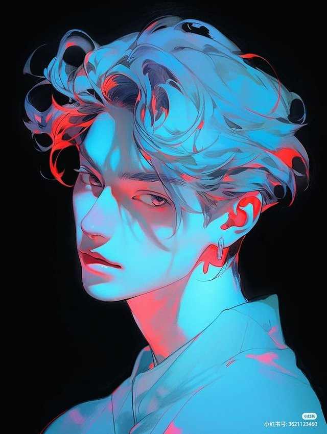
새벽빛 흐르는 어둠
새벽녘에 태어나 이름 붙은 파냐인 17세 정보관. 창백한 피부에 뱀 비늘 같은 옅은 파란 비늘이 촘촘히 돋아 있다. 계산적이고 잘난 척이 심하며 눈치가 없어, 자신이 ‘뱀들의 신’의 신도로 세상 모든 소리를 듣는다는 지어낸 세계관을 떠벌리고 다녀 ‘위험한 자’로 통한다. “원래 진정한 사도들은 이렇게 부정당하는 운명을 타고난 법.”
은빛사슴대
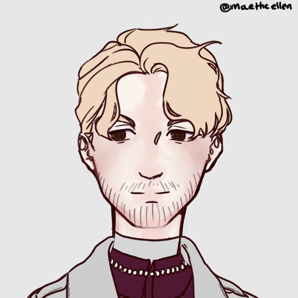
빅터 지나요브나
원래 작은 교회의 목사였던 제먀인 28세. 언데드 습격에 끝까지 저항하다 피난했고, 가족의 생사를 알지 못한 채 신앙심으로 버틴다. 고향에서 챙긴 묵주와 성물이라 불리는 은제 장식용 칼을 지니고, 군단병들과 조촐한 집회를 연다. 상식인이지만 이따금 급발진하는 면이 있다.
살구빛 떨어짐
눈에 표범 무늬가 있는 파냐인 32세. 주변 사람을 지키고 싶어 중전사를 지망하지만, 몇 개의 업적을 세우고도 스스로 만족하지 못해 아직 세 번째 이름을 얻지 않았다. 웃음이 전염되는 사람이다.
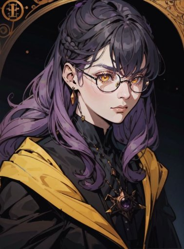
리아벨 말렉세이치
서쪽 호반의 견습 신문기자 출신 바르타인 22세. 인터뷰이에게 지나치게 깊이 공감하는 성격 탓에 정식 기자가 되지 못했다. 비넷의 “여러 곳을 여행하며 많은 사람을 만날 수 있다”는 말에 진심으로 공감해 얼떨결에 입대했고, 최종화 오프닝에서 군단병들의 과거·현재·미래를 인터뷰하는 역할(특유의 MZ 화법)을 맡는다.
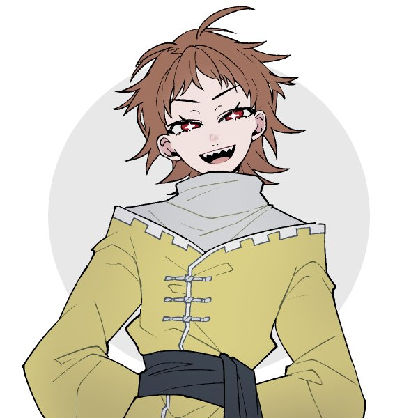
흙빛 갈기는 폭풍
아기 때 숲에 버려져 곰 무리에게 자식처럼 길러진 파냐인 16세. 상어 이빨과 곰 발바닥 같은 손발을 지녔고, 언데드에게 유난히 호전적이다. 문장 구사가 서툴러 “너, 이거 좋냐?”식으로 말하지만 언데드 이야기만은 또박또박 한다. 양부모는 “네가 세상의 모든 언데드를 해치우는 날 만나러 오겠다”며 그를 군단에 보냈다. “언데드 죽이고 싶어! 폭풍, 언데드 많이 죽일거야!”
불꽃이리대
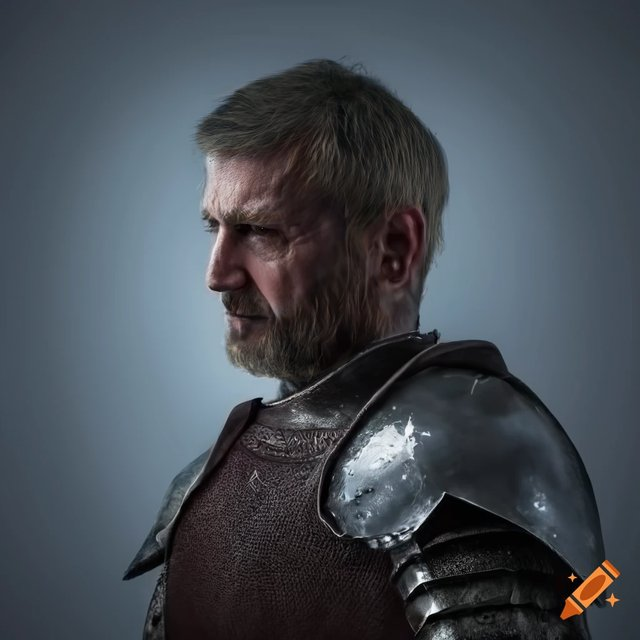
호박색 밀려오는 바람
손재주가 좋은 파냐인 52세로, 목재만 있으면 군단의 가구와 도구를 즉석에서 만든다. 피를 무서워하고 성취욕이 없어 25세에 스카웃된 뒤로도 승급 기회가 없었고, 자신의 생존을 우선하는 편이다. 최종화 성벽 보강 임무에서 공작 4의 활약을 했다. “은퇴할 시기를 놓쳤을 뿐일세.”
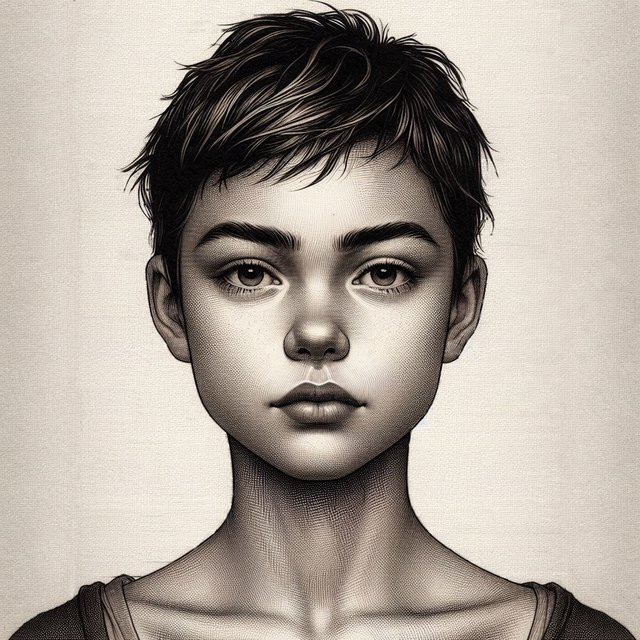
페니 마나부르
바르타에서 공방을 운영하는 집안의 맏이. 혼란한 세태를 이용하면 큰돈을 벌 수 있으리라 쉽게 생각하고 입대했다. 부모가 보낸 편지와 손에 딱 맞는 망치를 지녔고, 순진한 소원은 부자가 되는 것이다.
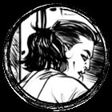
헤이즈 (남)
슈레야를 따르려고 입대한 바르타인 24세 남성. 정작 군단에 슈레야가 없다는 걸 뒤늦게 깨달았지만 피어를 따르는 것도 제법 괜찮은 일이라 여긴다. “어딜 사도 님께! 무례하게!” (동명이인인 헤이즈 25세 여성과는 완전히 별개 인물이다.)
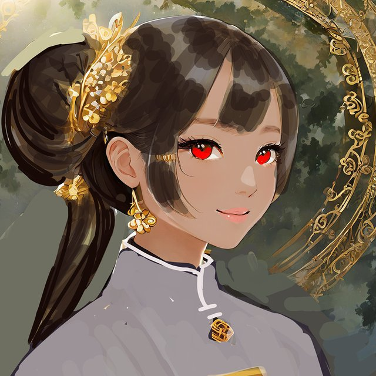
헤이즈 (여)
은유를 이해하지 못하는 단순명쾌한 바르타인 25세 여성. 여려 보이는 외모와 달리 체력으로 승부하고 싶어 하는 쾌녀지만 정작 체력에 큰 재능은 없다. 역시 슈레야를 따르려다 부재를 알고 피어를 따르게 됐으나, 그 뜻을 따르는 데 고통을 느낀다. (동명이인인 헤이즈 24세 남성과는 별개 인물이다.)
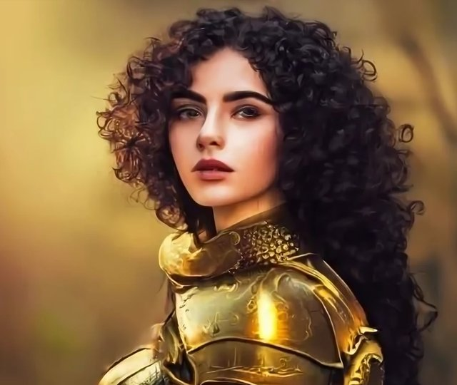
아디샤 카트리
어릴 때 부모를 여의고 오빠 프란츠의 손에 자란 바르타인 23세. 먼저 입대한 오빠와 연락이 끊기자 직접 오빠를 찾아 자원했고, 의무병을 희망한다. 오빠가 성인식 때 손수 깎아준 나뭇잎 무늬 나무 반지를 늘 왼손 검지에 낀다.
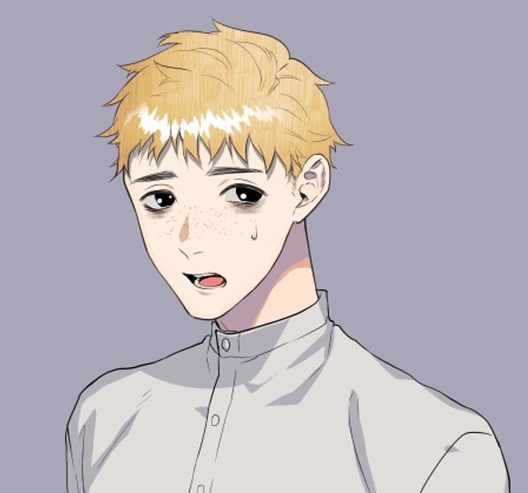
베일리
소심하고 겁 많지만 결심하면 당당해지는 제먀인 22세, 독실한 아스리카 신도. 동부 연합군 시절 말 더듬는 신병을 괴롭혔으나 그 신병이 자신을 대신해 희생하자 충격으로 탈영해, 수년간 실어증과 떠돌이 생활 끝에 속죄를 다짐하며 입대했다. 말을 심하게 더듬지만 군단에서 조금씩 호전됐다. 입대 당시 자기소개는 “베, 베, 베일리… 이, 입니다.”
웃는까마귀대
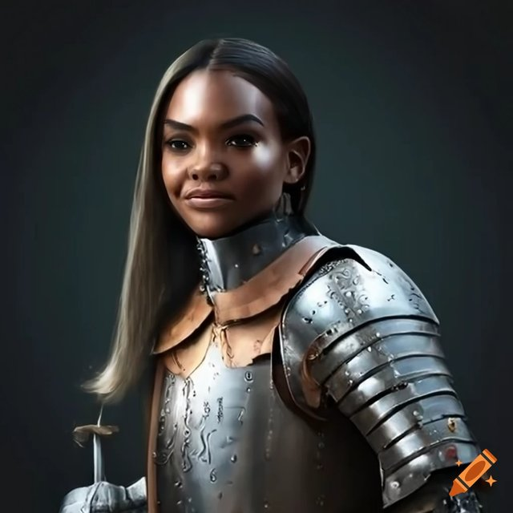
바니 카파티아
불우한 환경에서 자랐지만 인생역전의 기회를 믿는 무한긍정 바르타인 22세. “이봐! 오늘도 힘내, 화이팅, 넌 할 수 있어!”가 입버릇인 응원캐다. 순진한 소원은 성채 최종전에서 큰 공을 세워 인생을 역전하는 것.
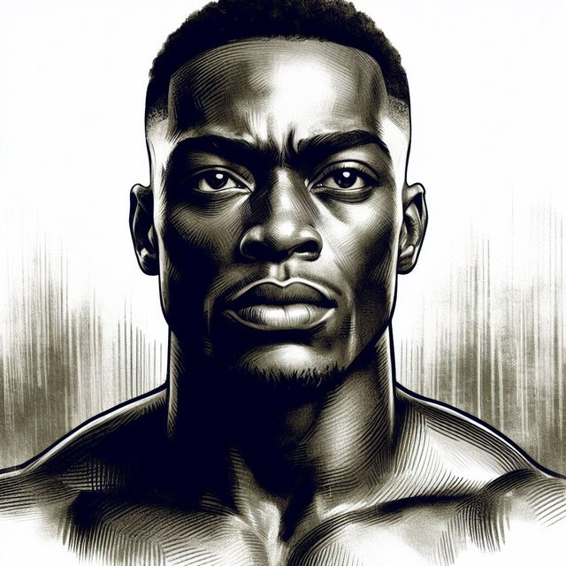
제이드 콜라이치
노략질하던 부족이 토벌당한 뒤 홀로 살아남아 용병단을 전전하다 입대한 제먀인. 혈족의 나무가 남아 있는 한 자신은 절대 죽지 않으리라 믿는다. 변이자의 손에 죽은 이를 본뜬 반려 변이병 “쪼코”와 교감했고, 최종화 산사태 임무에서 팔을 다쳤다(쪼코는 최종화에서 스러진다).
워레니아 ✝
과거 푸줏간 주인이던 무뚝뚝한 제먀인 35세. 언데드나 사람이 아니라 예전에 다루던 산짐승 고기를 다시 썰고 싶어 하며, 곰고기 만담이 특기였다. 날 선 고기칼을 갖는 게 소원이었으나, 최종화 본대 저지 산사태 임무(임무 C)에서 포식수에게 목숨을 잃었다.
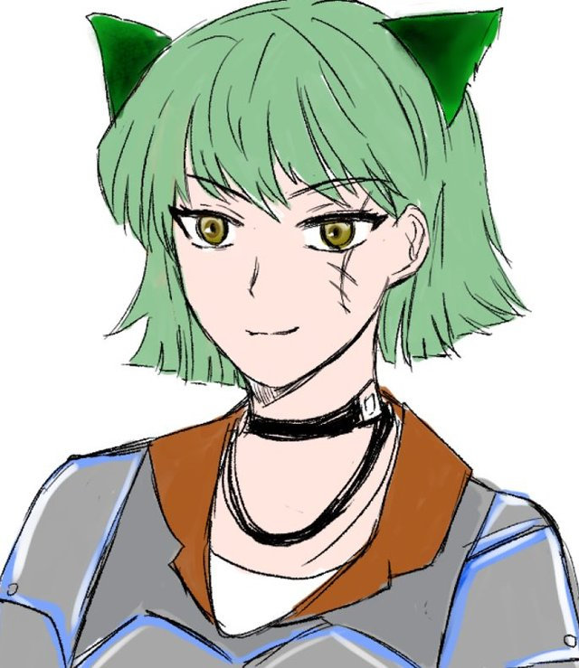
신록빛 뛰어오름 수풀 ✝
고양이 귀에 얼굴 한쪽 긴 흉터가 있는 파냐인 27세 숙련병. 야생 생존에 능하고 날렵한 몸놀림으로 남을 놀래키길 즐기는 장난스러운 성격이었다. 최고의 공성병기를 만들어 크게 기여하는 것이 소원이었다.
부서진사자대
알리 프레야비치
자칭 제먀 최고 꽃미남인 20세, 누나 다섯의 막내. 은빛 중단발에 애교 넘치고 자기애가 강하며, 상급자를 뺀 모두를 ‘자기’라 부른다. 사냥·노략질 사회에서 ‘야성미’를 증명하지 못해 무시당해온 것이 한이었다. 최종화에서 장교로 승급해 은빛사슴대를 지휘하게 된다.
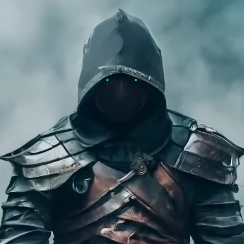
에이리크
후드 아래 녹안이 섬뜩하게 빛나는 제먀인 34세. 소름 끼치는 중저음으로 살육을 노래하는 수상한 사내로, 언데드를 무참히 찢어버린다는 소문이 돈다(찢은 게 언데드뿐인지는 미지수다). 공포로 각인될 이름 “에이리크”를 남기고 죽는 것이 소원이며, 출처 모를 피가 스민 양손검을 쓴다.
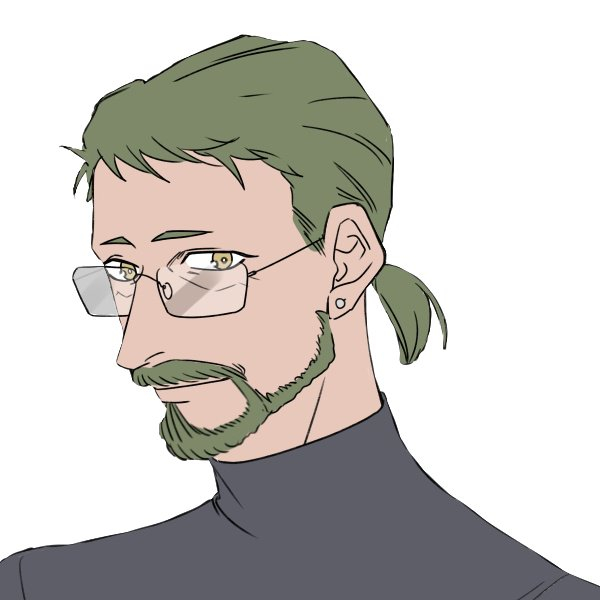
올리버 자작
총기 명가 반즈 가문 출신 오르인 43세, 20년 경력의 총기 장인. 이혼의 상처로 알코올에 빠졌다 끊으려 애쓴다. 먼저 군단에 입대했다 전사한 여동생의 죽음에, 어머니는 그 증오를 총에 담고 “총을 만드는 것도 중요하지만 잘 쏘는 것도 중요하다, 맞서 싸워라”는 유언을 남기고 병사했다. 왜곡증 1단계로 전부인·어머니의 환각에 시달린다.
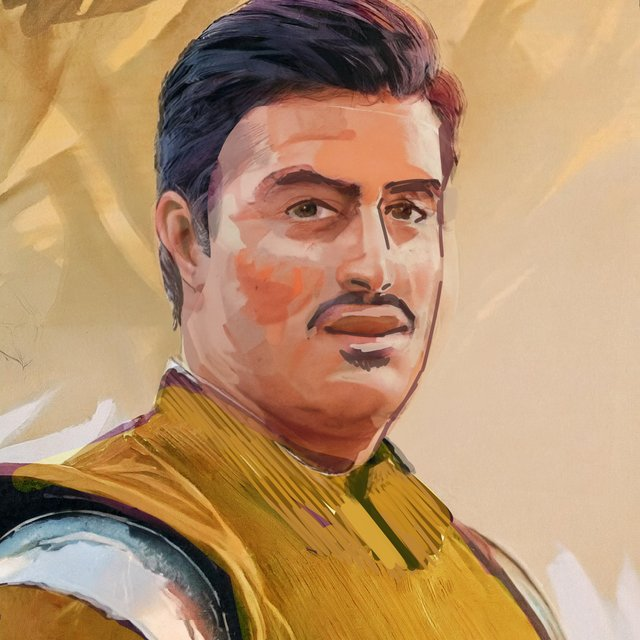
허니비 카파티아
단것이라면 사족을 못 쓰는 바르타인 29세. 한량처럼 살다 전쟁을 겪고 전쟁을 끝낸 뒤 가업을 잇겠다 다짐하며 스스로 개명해 입대했다. 고향에 돌아가 가업인 양봉과 꿀맥주를 파는 것이 소원이다.
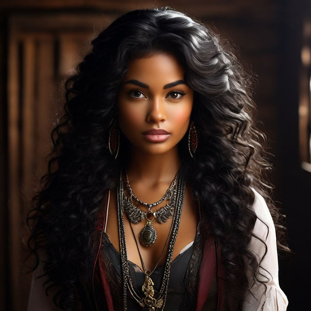
세네하 카트리 ✝
가문의 문장을 새긴 만년필을 소중히 여기는 바르타 여성 36세. 박하차를 마시며 글을 쓰고 기록하기를 좋아하지만 누구에게도 보여주지 않으며, 언제나 지혜를 갈망했다. 8화 장례식에서 추모되었다.
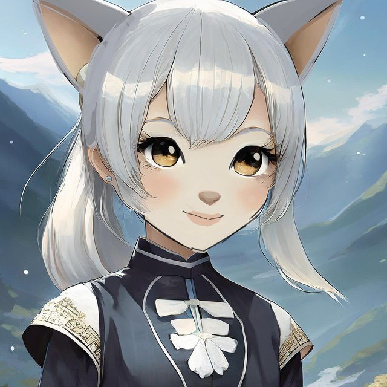
은빛 춤추는 오로라 ✝
겁이 많고 입대를 후회하던 파냐인 24세 여성, 고양이 귀. 남의 고민은 잘 들어주면서 자기 고민은 말한 적이 없다. 전쟁이 끝나 아무도 눈치채지 못할 때 빠르게 탈영하는 것이 순진한 소원이었다.
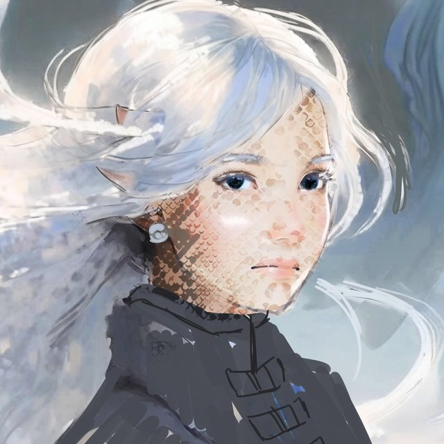
검은 파도 메칸 ✝
다르인과 파냐인의 혼혈 여성으로 고아처럼 자랐다. 겉보기엔 다르인이지만 실질은 파냐인이라 핏줄을 두고 깊이 고뇌했고, 피부에 뱀 문양이 있다. 모두가 잠들고 밤하늘의 별을 볼 때만 행복을 느꼈다.
귀신올빼미대
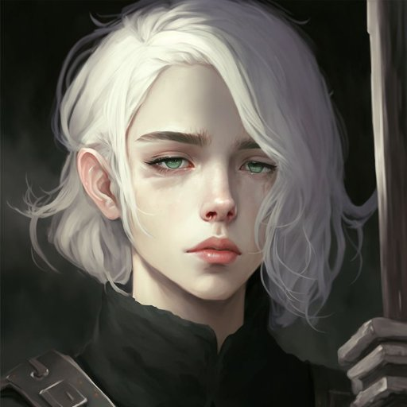
비넷 ✝
오르인이지만 작위를 스스로 거부한 37세 여성. 고향에 남은 12세 사촌 동생(조카) 브라운을 매일 걱정하고 그리워하면서도 누구에게도 말한 적이 없으며, 동료들의 죽음을 헛되게 하지 않으려 애썼다. 리아벨을 군단으로 이끈 장본인이고, 후반에 저격수로 승급해 최종화 산사태 임무에 나섰다. 조카 브라운은 결국 이모를 잃었다.
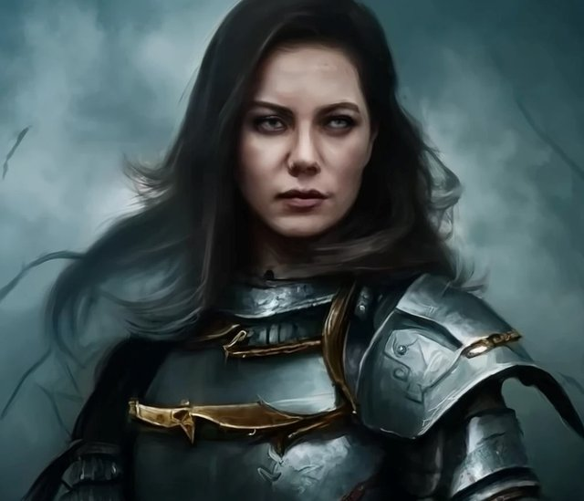
키타 데와
이제 막 “엄마”라고 불러주기 시작한 한 살배기 딸 리야를 언데드에게 잃은 바르타인 42세. 살아갈 의지를 잃었던 중 모병 소식에 망설임 없이 자원했다. 딸에게 주려던 손수 뜬 털장갑을 늘 머리맡에 베고 잔다. 죽을 자리를 찾아 헤매면서도 끝까지 모두를 지켜낸 인물.
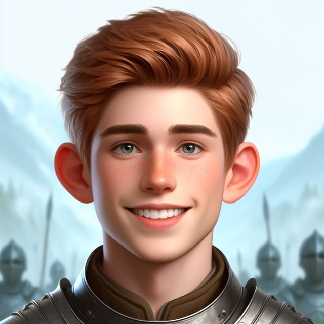
파르라니 흔들리는 샛별 ✝
큰 귀와 진저색 머리, 주근깨, 몸 곳곳에 원숭이 털이 난 파냐인 24세. 작가 지망생으로 매일 일기를 쓰고 무엇이든 성실하게 임했다. 어머니의 부풀린 군단 무용담에 매료돼 부모 몰래 편지를 남기고 입대했으며, 이 시대 최고의 ‘작가’이자 ‘영웅’이 되어 영웅담을 책으로 내는 것이 소원이었다. 1화 곡식 창고 임무에 출전했다.
노을빛 일렁이며 흩어지는 꽃내음 ✝
파냐인 건축가 42세. 바르타인과 결혼해 알더마크 서쪽 작은 마을에 살다, 일터에서 돌아와 언데드에게 참혹히 살해된 가족을 목격했다. 잿불의 왕에게 복수하기 위해 가장 효율적인 길을 택해 입대했다. 1화 곡식 창고 임무에 출전했다.
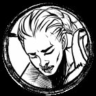
스벤 ✝
오르인. 개별 페이지에는 종족 정보 외의 서술이 거의 남아 있지 않은, 이름만 전해지는 전사자다.
별독사대
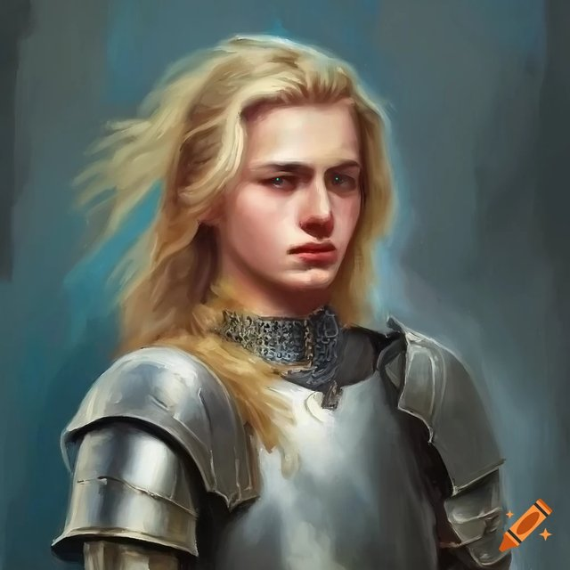
멜로디 ✝
대대로 창조신을 섬긴 귀족 이네우스 가의 막내인 오르인 19세. 유순한 성질 탓에 창조신의 이단이자 사이비인 ‘그노시스’교에 빠져, 현실의 재앙이 신앙 부족 탓이라 믿는 광신도다. 찬송가를 섬뜩하게 흥얼거리며 선교하려 입대했다. 최종화 아래쪽 고개 방어 임무(임무 B)에서 보라 키리시와의 사랑 서사를 남기고 전사했다.
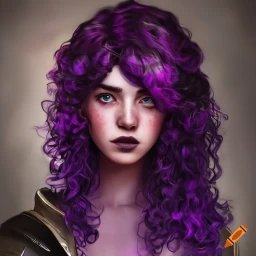
보라 키리시
무뚝뚝해 보이지만 말수가 적을 뿐 따뜻한 파냐인 22세 여성. 사이좋은 대가족과 전쟁으로 헤어졌고, 어딘가의 가족들을 지키기 위해 입대했다. 멜로디를 잃은 뒤 남은 삶을 군단에 바친다.
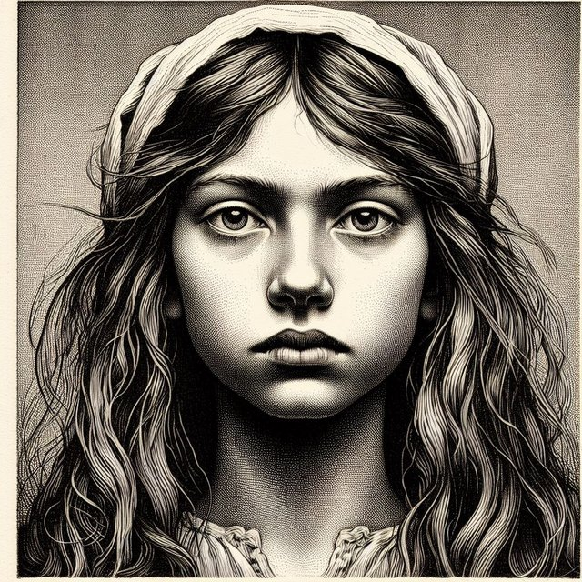
유리엘라 알리코브나
어머니를 따라 귀족집 하녀로 일하다, 모시던 귀족이 몰락하고 어머니가 세상을 뜨자 입대한 제먀인. 자신의 능력으로 위기를 헤쳐나갈 수 있다는 자신만만함이 순진한 소원이다. 어머니의 유품인 다용도 소형 나이프를 지닌다. “엄마가 뭐라고 했는데.. 맹세칼?” 최종화 임무 D에서 은빛사슴대와 함께 싸운다.
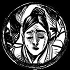
테오닌 콜라차이나 ✝
허무주의에 빠져 삶에 집착하지 않는 듯 보이나 실은 삶에 대한 강한 집착이 엿보이는 인물. 3화에서 같은 별독사대의 로젤을 잃고 전투 중 정신을 못 차릴 정도로 무너졌다. 5화, 특수병들이 대거 임무로 자리를 비운 사이 야영지를 덮친 언데드의 기습에서 목숨을 잃었다. 그를 끝까지 챙겨온 보라 키리시가 오래도록 슬퍼했다.
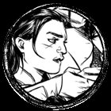
로젤 ✝
큰 죄를 짓고 고향에서 추방된 바르타인 28세 여성. 공을 세워 고향으로 돌아갈 수 있기를 바랐다. 그의 죽음은 동료 테오닌에게 깊은 상처를 남겼다.
명단 검증 (군단병 38명)
특수병 5 + 군단 직책 2 + 은빛사슴대 4 + 불꽃이리대 6(헤이즈 동명이인 2명 포함) + 웃는까마귀대 4 + 부서진사자대 7 + 귀신올빼미대 5 + 별독사대 5 = 38명. 소스 로스터(군단병들.5b67e14f/)의 개별 페이지 38개와 1:1로 대조해 빠짐·중복이 없음을 확인했다(헤이즈 두 명은 별개 페이지 6f9a5a8f·a26fdd9d로 각각 존재).
전사자: 로스터 상태 “사망” 9명(워레니아, 신록빛 뛰어오름 수풀, 세네하 카트리, 은빛 춤추는 오로라, 검은 파도 메칸, 파르라니 흔들리는 샛별, 노을빛 일렁이며 흩어지는 꽃내음, 스벤, 로젤) + 후기 기준 추가 전사 3명(멜로디, 비넷, 테오닌) = 12명.
-
멜로디는 로스터 상태값이 “군단병”(생존)으로 남아 있으나, 최종화 후기(치킨무·쟈키퐁)에 임무 B에서 보라 키리시와의 사랑 서사와 함께 전사한 것으로 기록된다. 후기 우선 원칙에 따라 전사로 표기한다. ↩
-
비넷 또한 로스터 상태값은 “군단병”(생존)이지만, 조카 브라운의 개별 페이지 마스터 코멘터리(“브라운은 결국 이모를 잃었군요. 이모는 정말 현명하고 용감했다고 말해주고 싶습니다”)가 최종화 전사를 명시한다. 로스터 상태값이 최종 스냅샷을 완전히 반영하지 못한 사례로, 원 자료(후기·코멘터리)를 우선해 전사로 표기한다. ↩
-
테오닌도 로스터 상태값은 “군단병”(생존)이지만, 5화 후기 2편이 특수병들이 임무로 자리를 비운 사이 야영지를 덮친 언데드의 기습으로 전사했음을 명시한다(“이 과정에서 테오닌이 목숨을 잃었습니다”, “언데드의 기습으로 테오닌이 죽었죠”). 후기 우선 원칙에 따라 전사로 표기한다. ↩